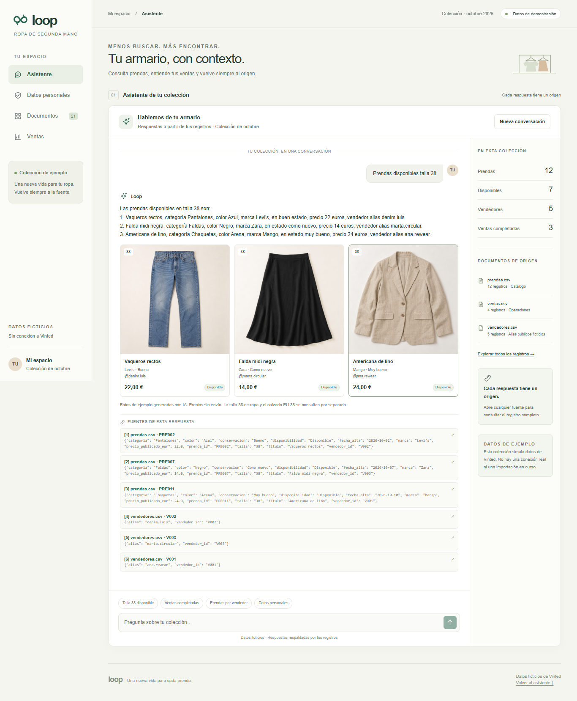
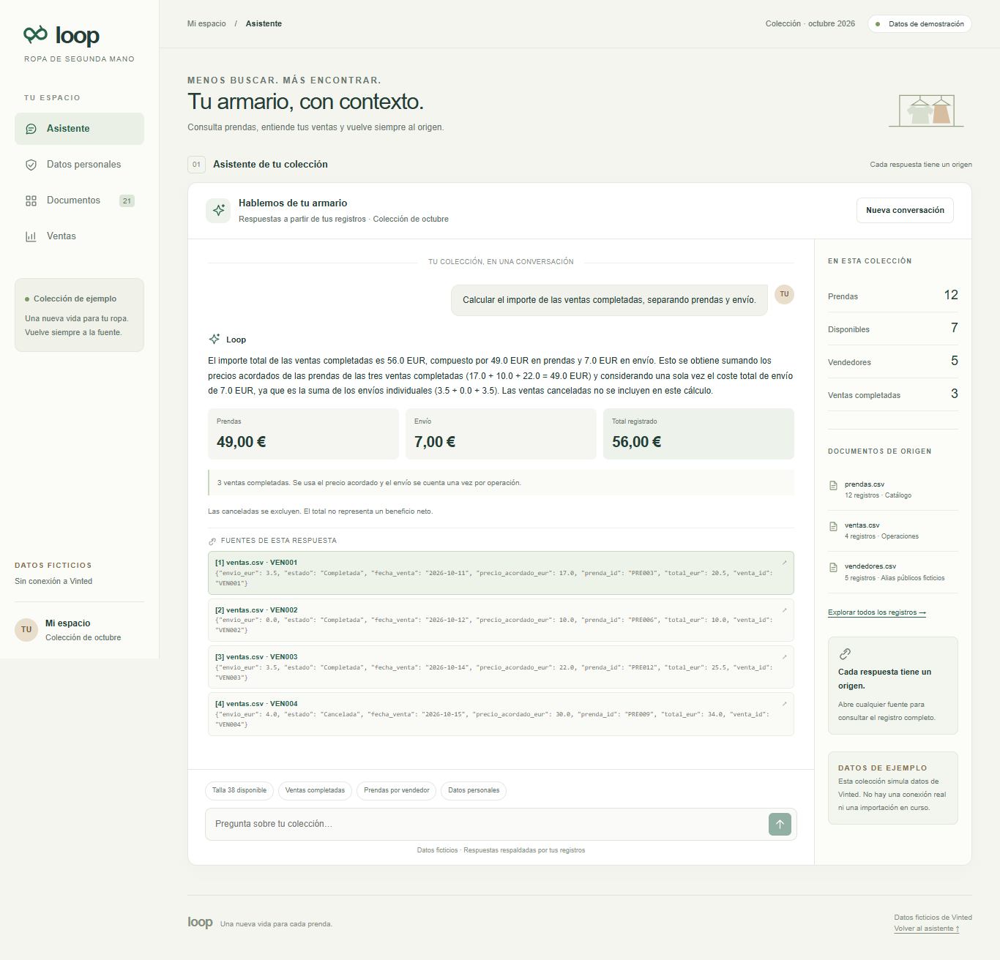
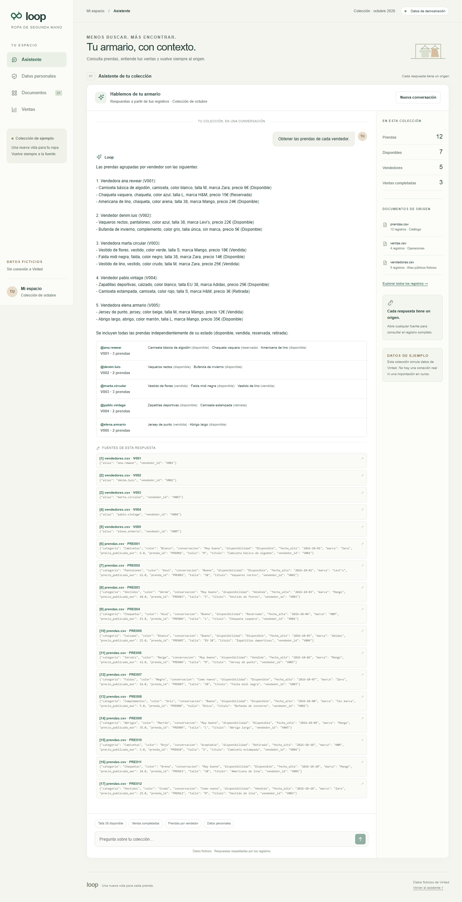
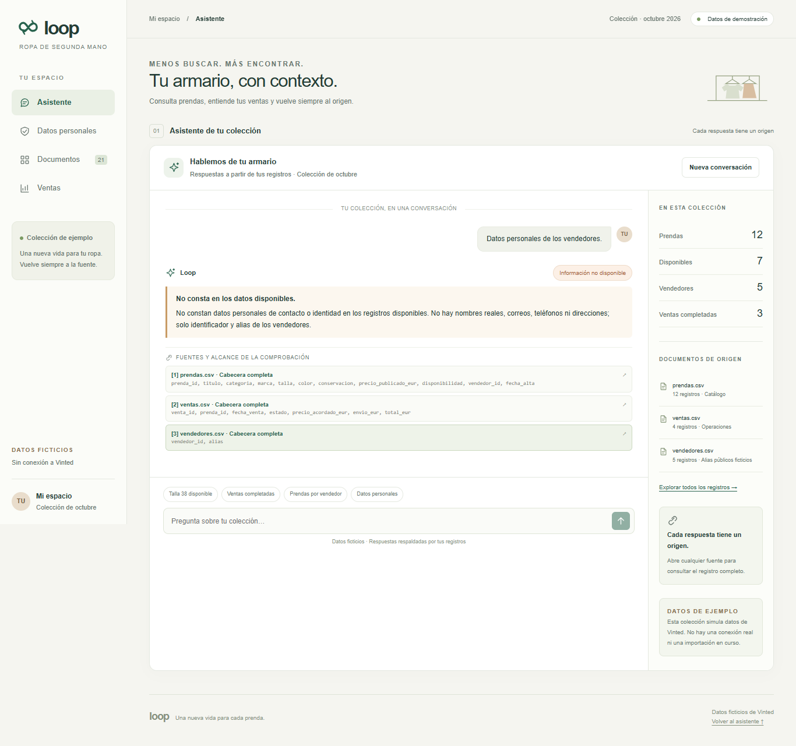
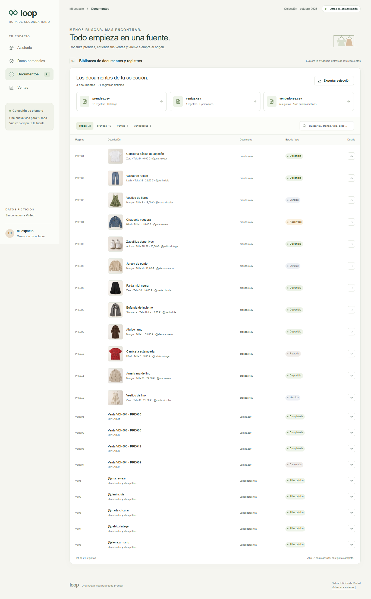

Un asistente para consultar una colección, comprender sus ventas y comprobar cada respuesta.
Consultar prendas y calcular ventas en registros separados obliga a buscar y cruzar datos a mano. Este proyecto permite hacerlo en un chat que muestra las fuentes y reconoce cuándo no dispone de la información.
Son datos ficticios incluidos en maquetas.html, con corte de colección del 16/10/2026. Se prepararon como prendas.csv, ventas.csv y vendedores.csv y se importaron a datos/loop.sqlite3, que es la fuente actual de la aplicación.
No hay conexión real a Vinted ni acceso a anuncios de terceros. Las fotos de las prendas son imágenes de ejemplo generadas con IA.
Pregunta 1 · búsqueda en el catálogo

Edge · ventana 1366 × 900 · captura completa 1366 × 1657 px. Las zonas con desplazamiento se expanden para conservar toda la respuesta y sus fuentes. La imagen completa se puede abrir desde el HTML.
Pregunta 2 · cálculo con registros completos

Edge · ventana 1366 × 900 · captura completa 1366 × 1312 px. Las zonas con desplazamiento se expanden para conservar toda la respuesta y sus fuentes. La imagen completa se puede abrir desde el HTML.
Pregunta 3 · relación entre dos documentos

Edge · ventana 1366 × 900 · captura completa 1366 × 2662 px. Las zonas con desplazamiento se expanden para conservar toda la respuesta y sus fuentes. La imagen completa se puede abrir desde el HTML.
Pregunta de control · identidad y contacto

Edge · ventana 1366 × 900 · captura completa 1366 × 1281 px. Las zonas con desplazamiento se expanden para conservar toda la respuesta y sus fuentes. La imagen completa se puede abrir desde el HTML.
Listado real · 3 documentos y 21 registros

Edge · ventana 1366 × 900 · captura completa 1366 × 2209 px. Las zonas con desplazamiento se expanden para conservar toda la respuesta y sus fuentes. La imagen completa se puede abrir desde el HTML.
Las consultas se enviaron desde el formulario, sin respuestas simuladas. El script esperó el HTTP 200 de /api/preguntar, la respuesta visible y todos sus botones de fuente; después contrastó cada fragmento con /api/documentos.
Prendas disponibles talla 38
Las prendas disponibles en talla 38 son: 1. Vaqueros rectos, categoría Pantalones, color Azul, marca Levi’s, en buen estado, precio 22 euros, vendedor alias denim.luis. 2. Falda midi negra, categoría Faldas, color Negro, marca Zara, en estado como nuevo, precio 14 euros, vendedor alias marta.circular. 3. Americana de lino, categoría Chaquetas, color Arena, marca Mango, en estado muy bueno, precio 24 euros, vendedor alias ana.rewear.
| Registro | Prenda | Precio | Alias |
|---|---|---|---|
| PRE002 | Vaqueros rectos | 22,00 € | @denim.luis |
| PRE007 | Falda midi negra | 14,00 € | @marta.circular |
| PRE011 | Americana de lino | 24,00 € | @ana.rewear |
Coincide: tres prendas disponibles de talla 38, con sus precios y alias.
Fuentes que debes abrir: en Documentos, busca PRE002, PRE007 y PRE011 y pulsa la flecha de detalle. Comprueba talla y disponibilidad; para los alias abre V002, V003 y V001, respectivamente. PRE005 permite confirmar que el calzado tiene talla EU 38 y queda excluido.
Calcular el importe de las ventas completadas, separando prendas y envío.
El importe total de las ventas completadas es 56.0 EUR, compuesto por 49.0 EUR en prendas y 7.0 EUR en envío. Esto se obtiene sumando los precios acordados de las prendas de las tres ventas completadas (17.0 + 10.0 + 22.0 = 49.0 EUR) y considerando una sola vez el coste total de envío de 7.0 EUR, ya que es la suma de los envíos individuales (3.5 + 0.0 + 3.5). Las ventas canceladas no se incluyen en este cálculo.
| Venta | Prenda acordada | Envío | Total |
|---|---|---|---|
| VEN001 | 17,00 € | 3,50 € | 20,50 € |
| VEN002 | 10,00 € | 0,00 € | 10,00 € |
| VEN003 | 22,00 € | 3,50 € | 25,50 € |
Coincide: 17 + 10 + 22 = 49 €; 3,50 + 0 + 3,50 = 7 €; total 56 €.
Fuentes que debes abrir: ventas.csv · VEN001, VEN002 y VEN003, todas completadas; después VEN004, cancelada y excluida. El total no es un beneficio neto: los documentos no contienen comisiones.
Obtener las prendas de cada vendedor.
Lo que respondió: agrupó las 12 prendas por los cinco alias, incluyendo prendas disponibles, vendidas, reservadas y retiradas. Esta tabla resume el contenido estructurado de la respuesta real:
| Fuente del vendedor | Prendas que debes abrir en prendas.csv |
|---|---|
| V001 @ana.rewear | PRE001 · Camiseta básica de algodón (Disponible) PRE004 · Chaqueta vaquera (Reservada) PRE011 · Americana de lino (Disponible) |
| V002 @denim.luis | PRE002 · Vaqueros rectos (Disponible) PRE008 · Bufanda de invierno (Disponible) |
| V003 @marta.circular | PRE003 · Vestido de flores (Vendida) PRE007 · Falda midi negra (Disponible) PRE012 · Vestido de lino (Vendida) |
| V004 @pablo.vintage | PRE005 · Zapatillas deportivas (Disponible) PRE010 · Camiseta estampada (Retirada) |
| V005 @elena.armario | PRE006 · Jersey de punto (Vendida) PRE009 · Abrigo largo (Disponible) |
Cómo confirmarlo: abre V001 a V005 en Documentos y compara el campo vendedor_id con los registros de prendas indicados en cada fila. Los alias, las asociaciones y los estados coinciden con las fuentes citadas.
Datos personales de los vendedores.
No constan datos personales de contacto o identidad en los registros disponibles. No hay nombres reales, correos, teléfonos ni direcciones; solo identificador y alias de los vendedores.
Coincide con el alcance de los documentos: estado no_consta.
Fuentes que debes abrir: vuelve a preguntar por los datos personales en el chat y abre vendedores.csv · Cabecera completa, prendas.csv · Cabecera completa y ventas.csv · Cabecera completa. En vendedores solo hay vendedor_id y alias; también puedes abrir V001 en Documentos para comprobar su registro completo. No hay nombres reales, correos, teléfonos ni direcciones en la colección.
La interfaz consulta un servidor Python. El RAG recupera evidencia de la colección antes de redactar la respuesta y conserva las fuentes para que se puedan comprobar.
servidor.py utiliza FastAPI y Pydantic. POST /api/preguntar recibe la pregunta y el historial; GET /api/documentos devuelve los documentos y sus registros.
Las sumas se calculan con Decimal y las agrupaciones abarcan las tablas completas, sin depender de un top-k parcial.
web/ utiliza Svelte y Vite. Incluye chat, fuentes desplegables en un diálogo, aviso de ausencia de datos, documentos y ventas.
La interfaz solo utiliza las rutas /api. La clave permanece en el .env del servidor y no llega al navegador.
SQLite guarda prendas, ventas, vendedores y 29 fragmentos con embeddings. El índice se reutiliza y se actualizan únicamente los fragmentos afectados por cambios.
La búsqueda coseno se ejecuta mediante SQL con una función registrada desde Python; es una búsqueda exacta para esta colección pequeña.
Respuesta: gpt-4.1-mini.
Embeddings: text-embedding-3-small.
Umbral coseno: 0.38. Sin evidencia similar no se llama al modelo generativo. La ausencia de datos personales se comprueba antes incluso de generar un embedding de consulta.
Desde la carpeta del proyecto, con las dependencias instaladas, abre dos terminales:
Terminal 1: uv run servidor.py
Terminal 2: cd web
npm run dev
Abrir: http://127.0.0.1:5173/
Para repetir el entregable, desde web/:
node capturas.mjs node entregable.mjs
La instalación usa npm install -D playwright-core y el Edge ya instalado con channel: "msedge"; no se descargan navegadores. Las 22 pruebas automatizadas de Python pasaron al preparar este documento. Las capturas se obtuvieron con Edge 154.0.4258.62, con una ventana de 1366 × 900 y sin sustituir las respuestas del servidor.